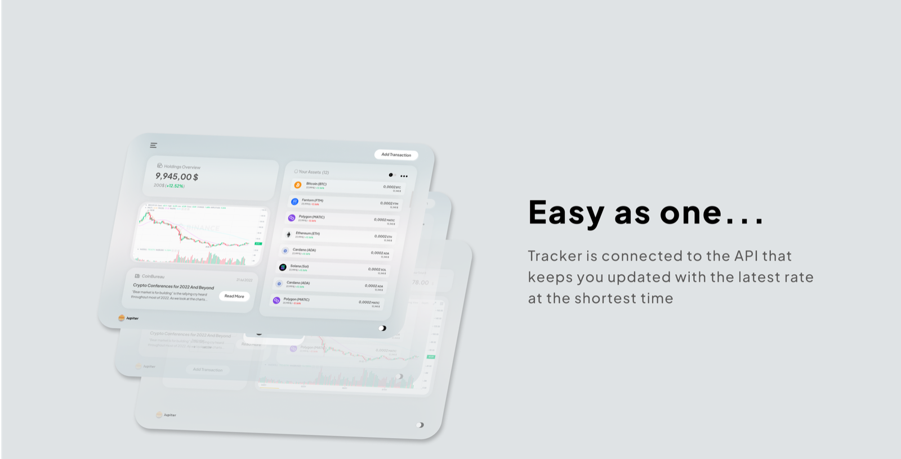
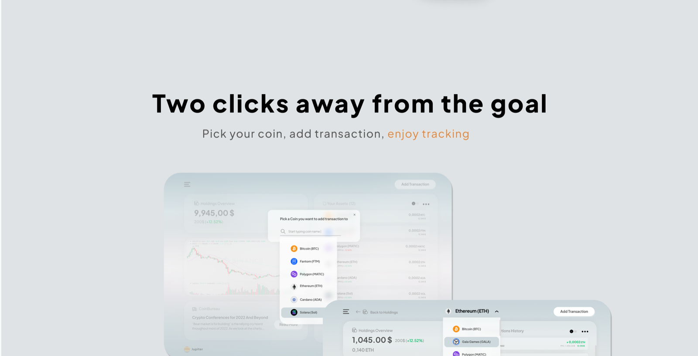
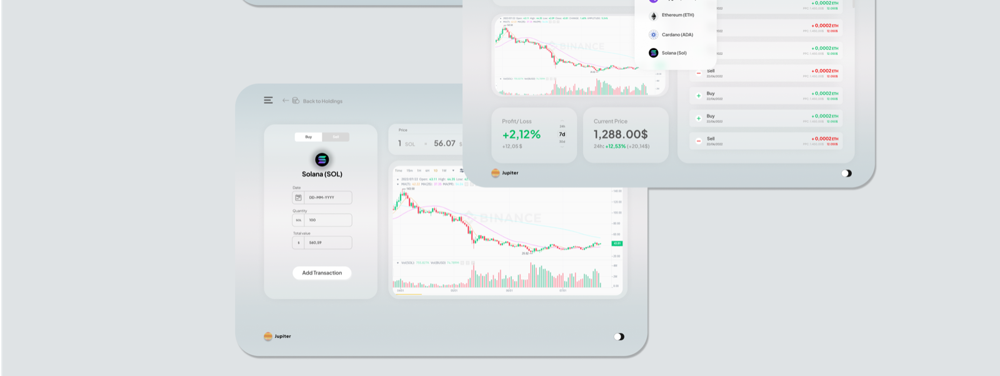
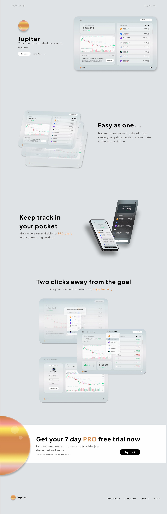

Crypto is chaotic. Your tracker shouldn't be.
Most crypto apps compete on adrenaline — flashing tickers, red-green everything, dashboards that feel like a trading floor. Jupiter takes the opposite bet: a near-monochrome interface on cool gray, where the only things allowed to shout are the numbers that changed. The result reads less like a casino and more like a bank statement you actually enjoy opening.
Gray canvas, one planet of color
The system is deliberately quiet: soft-shadowed white cards float on a #E0E3E6 canvas, headlines are set in heavy black Poppins, and semantic green/red is reserved strictly for market movement. The single brand gesture is the Jupiter planet — an orange gradient sphere that anchors the logo, the accent color, and the landing page's closing section.
#E0E3E6
#1A1A1A
#EC9A3C
#27AE60
Easy as one…
The holdings overview is the whole product in one screen: portfolio value, per-coin balances, a live chart, and crypto news — fed by an exchange API so rates update at the shortest possible interval. No refresh button, no stale numbers, no digging through tabs to learn what your portfolio did today.

Two clicks away from the goal
Adding a transaction is the flow users repeat daily, so it earned the most design attention: pick your coin from a searchable dropdown, enter the amount, done. The coin detail view answers the follow-up questions in place — profit/loss, current price, and full transaction history without leaving the screen.


Keep track in your pocket
The mobile version ships as a PRO perk with customizable settings — and it's where the dark mode earns its keep. Both themes were designed in parallel from the start, so the black phone in a user's hand mirrors the light desktop at their desk, down to the last card radius.
The product sells itself — the page just holds it up
The landing page reuses the app's own design system instead of inventing a marketing skin: real screens as hero imagery, section headlines in the product's voice ("Easy as one…", "Two clicks away from the goal"), and a single conversion moment — a 7-day PRO trial with no card required — pinned next to the orange planet.

Calm is a feature
Jupiter demonstrates a full product arc — app UI in two themes, a repeatable core flow measured in clicks, and a landing page that converts by showing rather than telling. The restraint is the point: in a category addicted to noise, an interface that keeps its voice down is the one users keep open all day.